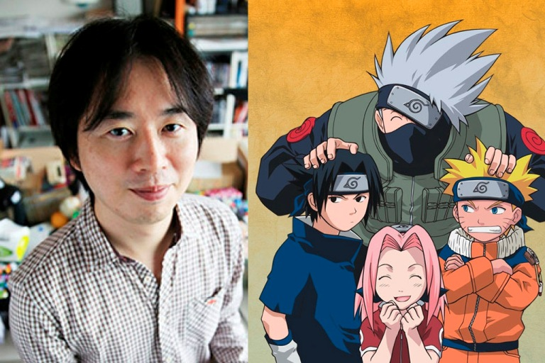
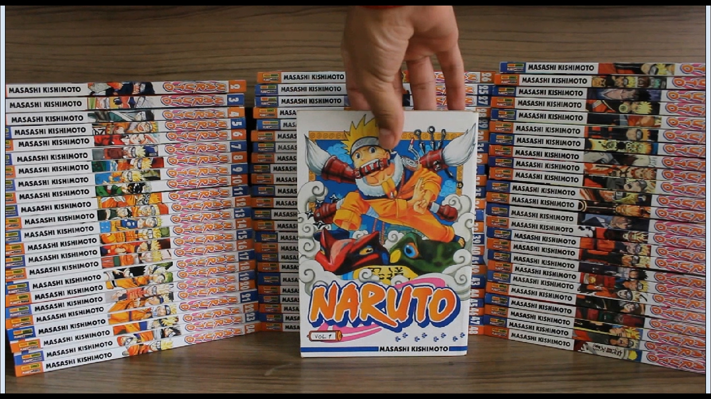

Masashi Kishimoto O criador de Naruto nasceu na cidade de Katsuta, Japão, em 1974. Ele é fanático por mangás e por lámen, o típico macarrão japonês. Tem um irmão gêmeo, Seishi Kishimoto, que é o autor de 666 Satan (ainda inédito no Brasil). Desde muito jovem sempre quis trabalhar com mangás. Ele treinava desenhar seus personagens favoritos (dentre eles o gato sem orelhas Doraemon, popular também no Brasil nos anos 90) e enviou diversos trabalhos para a redação da Shonen Jump, a revista mais popular de mangás shonen (direcionados para meninos entre 10 a 18 anos) do Japão.
naruto um grande sucesso conta com 9 Temporadas, totalizando 72 volumes de capitulo, uma obra gigantesca com diversos personagens e enredos de arrepiar
